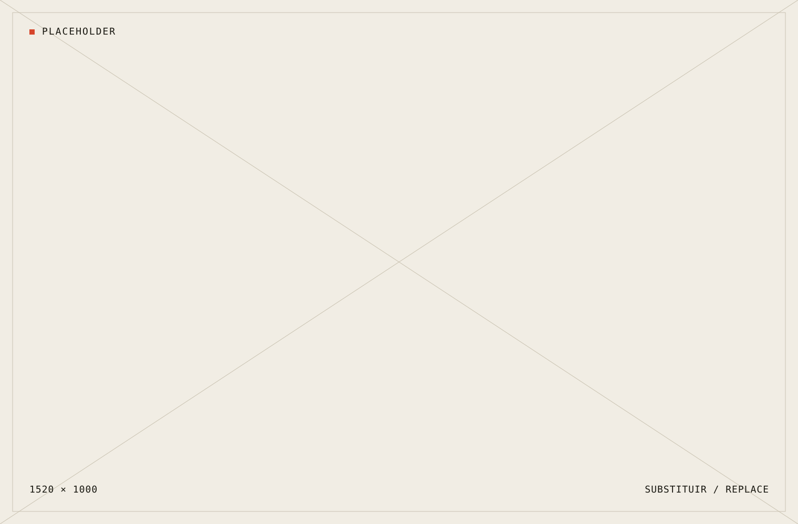

Branding / 2026
Motoclube
Visual identity for an informal group of motorcyclists. The symbol comes from the road seen from inside the helmet; the brand brings together symbol, palette and typography in applications such as stickers and the club’s profile.
The images on this page are placeholders and will be replaced by the final files. The text follows the project survey; the club’s official name, Instagram profile, colour values and type specifications still need to be confirmed. Pending data is explicitly marked.

Context
An identity for an informal group.
Motoclube is an informal group of motorcyclists. The contact came through a recommendation from one of its members; I did not know the group before the project. The work started in 2026 from a short questionnaire, with direct answers from the group.
The goal was to create an identity with its own symbol, usable on stickers and on the club’s profile. That questionnaire was the starting point, not an extensive brief.
The club’s official name, Instagram profile and technical data are still to be confirmed.
“The road seen from inside the helmet.”
Concept / 2026Concept
The road inside the helmet.
The symbol starts from a simple image: the road filling the field of view of someone inside the helmet. The road lines follow the helmet’s real curves.
The construction was designed to work as a mark, not as an illustration. The variations and the profile-photo guidance cover reading at different scales.

Symbol
A symbol built on screen.
The development happened directly on screen. No hand-drawn sketches were kept: the drawing was tested in variations of shape and composition until it reached the main version.
The main version is accompanied by variations for light and dark backgrounds. The delivery also covers use on light and dark, clear space and the profile photo.

Visual system
Asphalt, signage and landscape.
The palette comes from the road’s vocabulary: asphalt grey, the yellow of road markings and the greens of the landscape. The main typeface is a bold serif, in capitals, with a wide drawing and rounded corners.
The identity does not depend on many elements. The symbol, the palette and the typography carry the applications and were built to keep the reading consistent.

Exact colour, typeface and spacing values will be added with the final files. This preview does not invent that data.
Applications
The brand outside the archive.
The identity was applied to stickers and to the club’s Instagram profile. The delivery was also organised into a presentation PDF, with usage guidance and variations.

The presentation PDF is not available in this preview yet. The link will be added when the final file is included.
Outcome
Approved on sight, in use.
The proposal was approved right away by the group. The identity remains in use by the club.
There are no reach metrics, perception research or documented commercial results. The observable outcome is continued use. The system was built to keep consistency between the symbol, the variations and the applications.
Specifications
Project information.
- Category
- Branding / visual identity
- Client / context
- Informal group of motorcyclists (official name to be confirmed)
- Year
- 2026
- Scope
- Symbol, visual system, variations and application guidance
- Deliverables
- Vector logo, palette, variations, light/dark usage guidance, clear space, profile-photo guidance and presentation PDF
- Tools
- CorelDRAW
- Typography
- Bold serif, capitals, wide and rounded drawing (typeface to be confirmed)
- Status
- Editorial preview; images and official data to be added
- Content
- Official name, Instagram, colours and type specifications to be confirmed
Specifications in preview. Official data and final files will be added before publication.